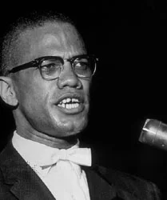

Malcolm X
Malcolm X, original name Malcolm Little, Muslim name el-Hajj Malik el-Shabazz, (born May 19, 1925, Omaha, Nebraska, U.S.—died February 21, 1965, New York, New York), African American leader and prominent figure in the Nation of Islam who articulated concepts of race pride and Black nationalism in the early 1960s. After his assassination, the widespread distribution of his life story—The Autobiography of Malcolm X (1965)—made him an ideological hero, especially among Black youth.
Early years and conversion to Islam
Born in Nebraska, while an infant Malcolm moved with his family to Lansing, Michigan. When Malcolm was six years old, his father, the Rev. Earl Little, a Baptist minister and former supporter of the early Black nationalist leader Marcus Garvey, died after being hit by a streetcar, quite possibly the victim of murder by whites. The surviving family was so poor that Malcolm's mother, Louise Little, resorted to cooking dandelion greens from the street to feed her children. After she was committed to an insane asylum in 1939, Malcolm and his siblings were sent to foster homes or to live with family members.
Malcolm excelled in school, but after one of his eighth-grade teachers told him that he should become a carpenter instead of a lawyer, he lost interest and soon ended his formal education. As a rebellious youngster, Malcolm moved from the Michigan State Detention Home, a juvenile home in Mason, Michigan, to the Roxbury section of Boston to live with an older half sister, Ella, from his father’s first marriage. There he became involved in petty criminal activities in his teenage years. Known as “Detroit Red” for the reddish tinge in his hair, he developed into a street hustler, drug dealer, and leader of a gang of thieves in Roxbury and Harlem min (in New York City).
While in prison for robbery from 1946 to 1952, he underwent a conversion that eventually led him to join the Nation of Islam, an African American movement that combined elements of Islam with Black nationalism. His decision to join the Nation also was influenced by discussions with his brother Reginald, who had become a member in Detroit and who was incarcerated with Malcolm in the Norfolk Prison Colony in Massachusetts in 1948. Malcolm quit smoking and gambling and refused to eat pork in keeping with the Nation’s dietary restrictions. In order to educate himself, he spent long hours reading books in the prison library, even memorizing a dictionary. He also sharpened his forensic skills by participating in debate classes. Following Nation tradition, he replaced his surname, “Little,” with an “X,” a custom among Nation of Islam followers who considered their family names to have originated with white slaveholders.
Malcolm X and the Nation of Islam
After his release from prison Malcolm helped to lead the Nation of Islam during the period of its greatest growth and influence. He met Elijah Muhammad in Chicago in 1952 and then began organizing temples for the Nation in New York, Philadelphia, and Boston and in cities in the South. He founded the Nation’s newspaper, Muhammad Speaks, which he printed in the basement of his home, and initiated the practice of requiring every male member of the Nation to sell an assigned number of newspapers on the street as a recruiting and fund-raising technique. He also articulated the Nation’s racial doctrines on the inherent evil of whites and the natural superiority of Blacks.
Malcolm rose rapidly to become the minister of Boston Temple No. 11, which he founded; he was later rewarded with the post of minister of Temple No. 7 in Harlem, the largest and most prestigious temple in the Nation after the Chicago headquarters. Recognizing his talent and ability, Elijah Muhammad, who had a special affection for Malcolm, named him the National Representative of the Nation of Islam, second in rank to Muhammad himself. Under Malcolm’s lieutenancy, the Nation claimed a membership of 500,000. The actual number of members fluctuated, however, and the influence of the organization, refracted through the public persona of Malcolm X, always greatly exceeded its size.
An articulate public speaker, a charismatic personality, and an indefatigable organizer, Malcolm X expressed the pent-up anger, frustration, and bitterness of African Americans during the major phase of the civil rights movement from 1955 to 1965. He preached on the streets of Harlem and spoke at major universities such as Harvard University and the University of Oxford. His keen intellect, incisive wit, and ardent radicalism made him a formidable critic of American society. He also criticized the mainstream civil rights movement, challenging Martin Luther King, Jr.’s central notions of integration and nonviolence. Malcolm argued that more was at stake than the civil right to sit in a restaurant or even to vote—the most important issues were Black identity, integrity, and independence. In contrast to King’s strategy of nonviolence, civil disobedience, and redemptive suffering, Malcolm urged his followers to defend themselves “by any means necessary.” His biting critique of the “so-called Negro” provided the intellectual foundations for the Black Power and Black consciousness movements in the United States in the late 1960s and ’70s (see Black nationalism). Through the influence of the Nation of Islam, Malcolm X helped to change the terms used to refer to African Americans from “Negro” and “coloured” to “Black” and “Afro-American.”
Final years and legacy
In 1963 there were deep tensions between Malcolm and Elijah Muhamma over the political direction of the Nation. Malcolm urged that the Nation become more active in the widespread civil rights protests instead of just being a critic on the sidelines. Muhammad’s violations of the moral code of the Nation further worsened his relations with Malcolm, who was devastated when he learned that Muhammad had fathered children by six of his personal secretaries, two of whom filed paternity suits and made the issue public. Malcolm brought additional bad publicity to the Nation when he declared publicly that Pres. John F. Kennedy’s assination was an example of “chickens coming home to roost”—a violent society suffering the consequences of violence. In response to the outrage this statement provoked, Elijah Muhammad ordered Malcolm to observe a 90-day period of silence, and the break between the two leaders became permanent.
Malcolm left the Nation in March 1964 and in the next month founded Muslim Mosque, Inc. During his pilgrimage to Mecca that same year, he experienced a second conversion and embraced Sunni Islam, adopting the Muslim name el-Hajj Malik el-Shabazz. Renouncing the separatist beliefs of the Nation, he claimed that the solution to racial problems in the United States lay in orthodox Islam. On the second of two visits to Africa in 1964, he addressed the Organization of African Unity (known as the frican Union since 2002), an intergovernmental group established to promote African unity, international cooperation, and economic development. In 1965 he founded the Organization of Afro-American Unity as a secular vehicle to internationalize the plight of Black Americans and to make common cause with the people of the developing world—to move from civil rights to human rights.
The growing hostility between Malcolm and the Nation led to death threats and open violence against him. On February 21, 1965, Malcolm was assassinated while delivering a lecture at the Audubon Ballroom in Washington Heights. Three members of the Nation of Islam were arrested. During the trial, one of the suspects, Talmadge Hayer (also called Thomas Hagan; later known as Mujahid Abdul Halim), confessed but claimed the other two defendants—Norman 3X Butler (Muhammad Aziz) and Thomas 15X Johnson (Khalil Islam)—were not involved. Despite his testimony, all three men were convicted of the murder. Doubts over the guilt of Aziz and Islam persisted, and in 2021 both men were exonerated.
Malcolm was survived by his wife, Betty Shabazz, whom he married in 1958, and six daughters. His martyrdom, ideas, and speeches contributed to the development of Black nationalist ideology and the Black Power movement and helped to popularize the values of autonomy and independence among African Americans in the 1960s and ’70s.